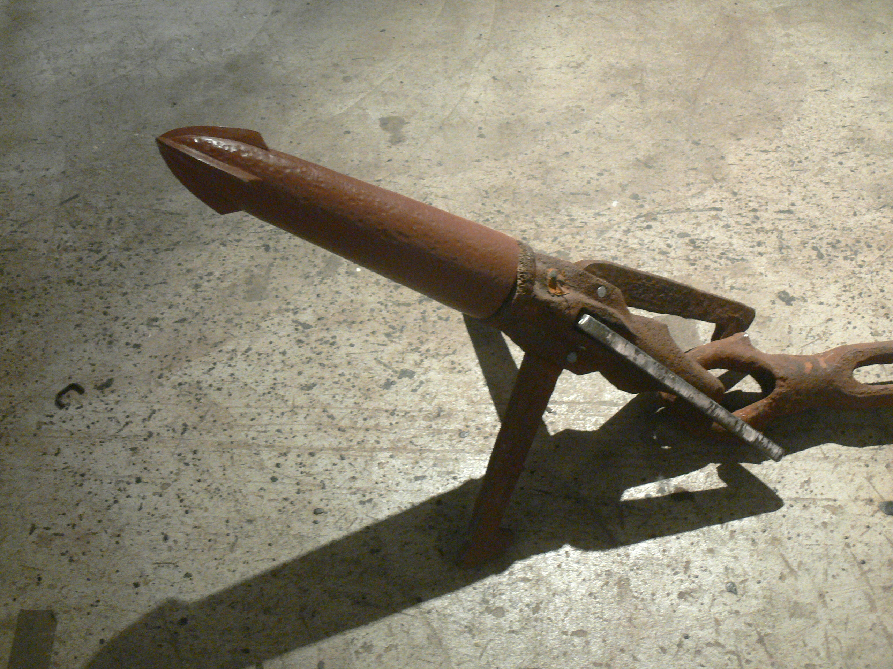

Vroeger
 Vroeger waren mensen een grote bedreiging voor de blauwe vinvis. Er werd heel veel op hun gejaagd. Ze wilde het vlees en vet. Ook kreeg je uit 1 blauwe vinvis ongeveer 70 tonnen olie. Dit gebruikte ze om lampenolie van te maken. Uiteindelijk kwam de gaslamp en werd de olie van de blauwe vinvis onnodig. In de walvisvaart waren blauwe vinvissen niet heel fijn om te vangen, want hij was snel, kon diep duiken en leefde alleen op de volle zeeën. Ook jaagden de mensen in het begin met hele kleine bootjes en zelf gemaakte harpoenen dus een blauwe vinvis was veel te groot. In de negentiende eeuw kwam er betere technologie dus konden ook grote walvissen worden gevangen en dus ook de blauwe vinvis. Vanaf dat moment werd er heel veel op de blauwe vinvis gejaagd.
Nu
Vanaf 1966 werd het jagen op de blauwe vinvis verboden. Er was toen minder dan 1% van de hele populatie die er ooit was over. Dat zijn er nu ongeveer 20000 tot 25000. Gelukkig neemt het aantal nu wel toe. Op dit moment wordt er niet gejaagd, maar nog steeds gaan er blauwe vinvissen dood. Dat komt doordat ze tegen grote schepen aan zwemmen en door vervuiling van de zeeën. Soms raakt er zelfs een blauwe vinvis verstrikt in grote visnetten. Veel schepen hebben ook een sonar. Dat is een sensor die geluid maakt en als dat dan tegen een object aan botst dan weet je dus waar dat object is. En het gedrag van de blauwe kan door die sonar worden verstoord.
Ga terug